Vamos agora construir o método de Newton-Raphson, ou seja, o método de Newton generalizado para sistemas. Assumimos, portanto, que a função F(x) é diferenciável e que existe um ponto x* tal que F(x*) = 0. Seja x(k) uma aproximação para x*, queremos construir uma nova aproximação x(k+1) através da linearização de F(x) no ponto x(k).
|
|
Supondo que a matriz jacobina seja inversível no ponto x(k), temos:
Desta forma, o método iterativo de Newton-Raphson para encontrar as raízes de F(x) = 0 é dado por:
|
|
Observação 5.1.1. Usamos subíndices para indicar o elemento de um vetor e super-índices para indicar o passo da iteração. Assim x(k) se refere à iteração k e xi(k) se refere à componente i no vetor x(k).
Observação 5.1.2. A notação JF -1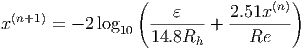 enfatiza que a jacobiana deve ser calculada a cada passo.
Observação 5.1.3. Podemos definir o passo Δ(k) como
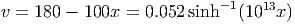 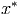 Exemplo 5.1.1. Retornamos ao nosso exemplo inicial, isto é, resolver numericamente os seguinte sistema não-linear:
|
|
cuja jacobiana é:
|
|
Faremos a implementação numérica no Scilab. Para tal definimos as funções que implementarão F(x) e a JF (x) 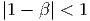 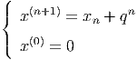
Alternativamente, estas funções poderiam ser escritas como


Desta forma, se x é uma aproximação para a raiz, pode-se calcular a próxima
aproximação através dos comandos:
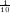

Ou simplesmente
 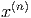
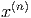
Observe que as soluções exatas desse sistema são  .
.
Exemplo 5.1.2. Encontre uma aproximação para a solução do sistema
Solução. Vamos, aqui, dar as principais ideias para se obter a solução. Começamos definindo a função F(x) por:
|
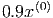
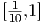
|
cuja jacobiana é:
 |
No Scilab, podemos implementá-las com o seguinte código:
 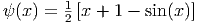
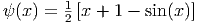
E agora, basta iterar:
 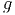
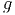
♢